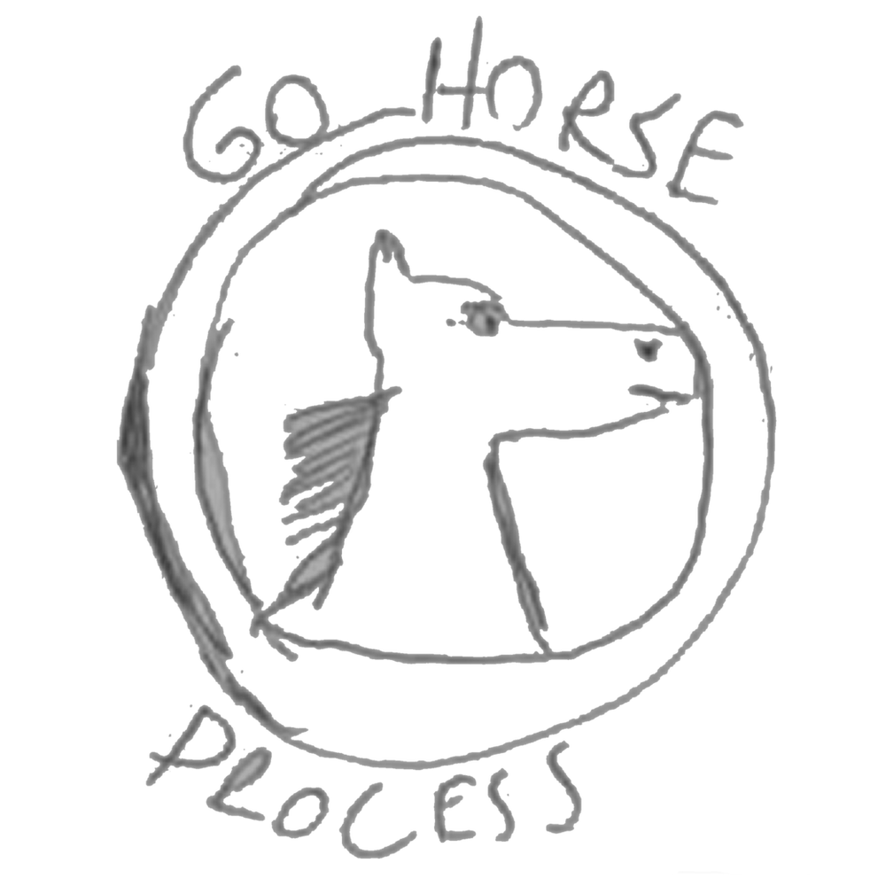

Aqui você pode acompanhar os projetos desenvolvidos por Matheus H. N. Farias

Sou Matheus, assistente de TI com 24 anos e atualmente trabalho no Centro de Diagnósticos por Imagem Lucilo Ávila. Com uma forte paixão por ciência e tecnologia, possuo um olhar atento para inovações tecnológicas e busco sempre aplicar soluções eficientes para os desafios do dia a dia.
Tenho interesse crescente na área de dados e de Infraestrutura, com foco em me tornar cientista de dados, engenheiro de dados, administrador de banco de dados. Estou em busca de oportunidades que me permitam explorar e expandir meu conhecimento em dados, usando ferramentas e práticas avançadas para otimizar processos e gerar insights valiosos.
Formações e Projetos desenvolvidos
Selo de aprovação:
